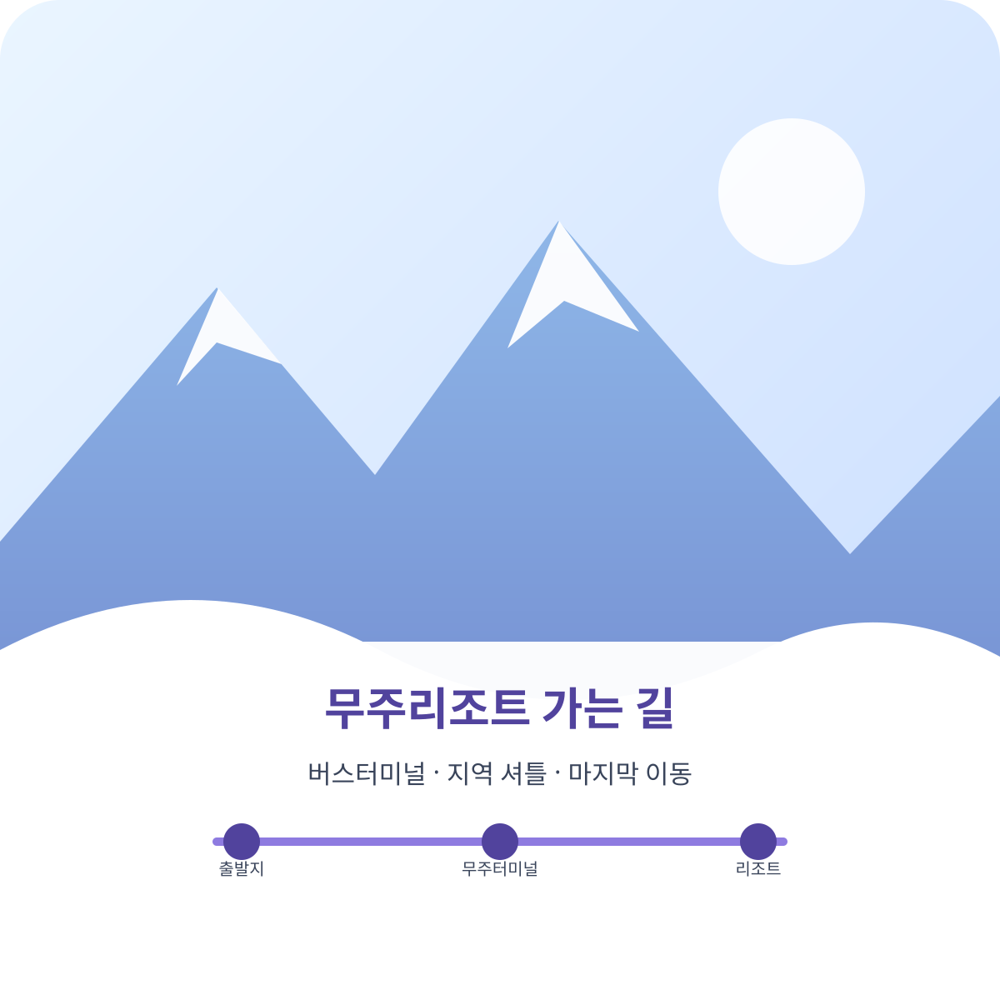

Travel Guide · 2026-10-03 확인
무주리조트 가는 법: 11개 도시 대중교통·셔틀

대중교통으로 무주덕유산리조트에 갈 때는 무주공용버스터미널까지 이동한 뒤 택시 또는 무주군내버스와 택시를 이용해 리조트로 이동합니다. 지역별 관광 셔틀은 시즌 운행 여부와 예약을 먼저 확인하세요.
아래 대중교통 경로와 이동 시간은 무주덕유산리조트 공식 교통 안내를, 시즌 셔틀 연락처는 공식 제휴 버스 안내를 기준으로 정리했습니다. 시간표와 운행 여부는 바뀔 수 있으니 출발 전에 운수사와 터미널에서 다시 확인하세요.
도시별 이동 경로
| 출발 지역 | 대중교통 경로 | 시즌 셔틀 확인 |
|---|---|---|
| 대전 | 대전복합터미널 → 무주공용버스터미널 약 50분 | 금남관광 042-252-7780 |
| 대구 | 대구 → 대전복합터미널 약 2시간 20분, 대전 → 무주 약 50분 | 무궁화관광 053-422-5555 |
| 부산 | 부산 → 대전복합터미널 약 3시간 10분, 대전 → 무주 약 50분 | 새부산관광 051-851-0600 |
| 전주 | 전주 → 무주공용버스터미널 약 1시간 50분~2시간 30분 | 무주레저투어 063-231-8801 |
| 창원 | 정기 버스 연결편은 출발일 기준으로 터미널에서 확인 | 그린고속관광 055-264-5700 |
| 천안 | 정기 버스 연결편은 출발일 기준으로 터미널에서 확인 | 미르여행사 042-471-0970 |
| 청주 | 공식 제휴 셔틀 목록에 청주 출발사가 없어 무주행 버스·환승편 확인 | 공식 목록에 청주 출발사 없음 |
| 광주 | 광주터미널 → 무주터미널 약 3시간 30분 | 광남고속관광 062-573-6100 · 뉴남광여행 062-943-4885 |
| 군산 | 공식 교통 안내에 군산 출발 상세 경로 없음; 무주행 버스·환승편 확인 | 제휴 목록: 무주레져투어 063-231-8801 (군산·익산·전주) |
| 익산 | 공식 교통 안내에 익산 출발 상세 경로 없음; 무주행 버스·환승편 확인 | 제휴 목록: 무주레져투어 063-231-8801 (군산·익산·전주) |
| 울산 | 공식 교통 안내에 울산 출발 상세 경로 없음; 무주행 버스·환승편 확인 | 공식 제휴 버스 목록에 울산 출발사 없음 |
제휴 버스 페이지에 업체가 올라와 있어도 매 시즌 운행을 보장하는 뜻은 아닙니다. 리조트도 운행 여부를 사전 확인하고 예약하도록 안내합니다. 전화로 해당 날짜의 운행지, 출발 시각, 왕복 여부, 예약 마감일을 확인하세요.
무주 터미널에서 리조트까지
- 택시를 이용하면 무주공용버스터미널에서 리조트까지 약 20분입니다.
- 군내버스를 이용할 경우 배방 정류장에서 내린 뒤 택시로 환승하는 경로가 안내되어 있습니다. 버스 구간은 약 50분으로 소개되므로 연결 시간까지 여유를 두세요.
- 리조트 안팎의 마을 셔틀은 무주 지역 내 노선입니다. 대전·대구 등에서 바로 오는 광역 셔틀과 구분해 확인하세요.
무주군내 셔틀의 노선·운행일은 리조트 셔틀 안내에서 확인할 수 있습니다. 운행 날짜와 탑승 장소는 출발일 전에 다시 확인하는 편이 안전합니다.
출발 전 확인 목록
- 1. 터미널 시간표를 확인합니다.
출발일과 돌아오는 날의 막차 시간을 함께 확인하세요. - 2. 셔틀 운행사에 직접 문의합니다.
시즌 운행 여부, 출발 위치, 왕복편, 예약 방법을 확인하세요. - 3. 마지막 이동 수단을 정합니다.
무주 터미널에서 택시를 탈지, 군내버스와 택시를 이어 탈지 미리 결정하세요.
자주 묻는 질문
무주리조트 대중교통은 어디까지 이동하면 되나요?
리조트 공식 교통 안내는 무주터미널까지 이동한 뒤 택시로 약 20분, 또는 시외버스로 배방삼거리에서 내려 택시로 약 50분 이동하는 경로를 안내합니다. 시간표는 출발 전에 확인하세요.
광주에서 무주터미널까지 가는 공식 버스 경로가 있나요?
네. 리조트 공식 교통 안내에 광주터미널에서 무주터미널까지 약 3시간 30분 소요되는 시외버스 경로가 안내되어 있습니다. 출발 시간과 운행 여부는 터미널에서 확인하세요.
군산·익산에서 출발하는 제휴 셔틀은 있나요?
리조트 제휴 버스 목록에는 군산·익산·전주 지역의 무주레져투어 연락처가 함께 안내되어 있습니다. 실제 출발 장소와 해당 날짜의 운행 여부는 업체에 확인하고 예약하세요.
울산에서 출발하는 공식 셔틀은 있나요?
현재 리조트 공식 제휴 버스 목록에는 울산 출발사가 표시되어 있지 않습니다. 무주행 버스와 환승편을 직접 확인하고, 터미널 시간표를 출발 전에 확인하세요.